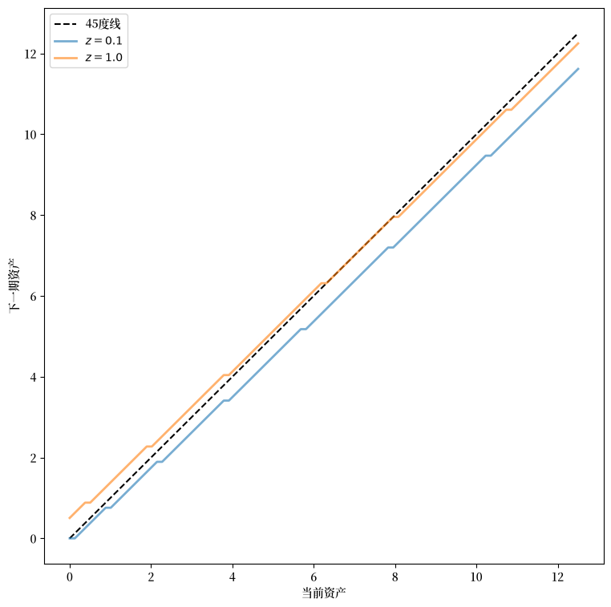
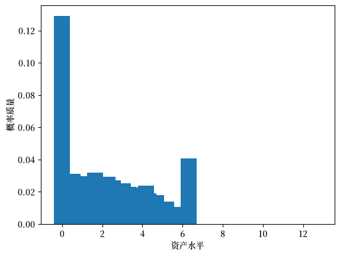
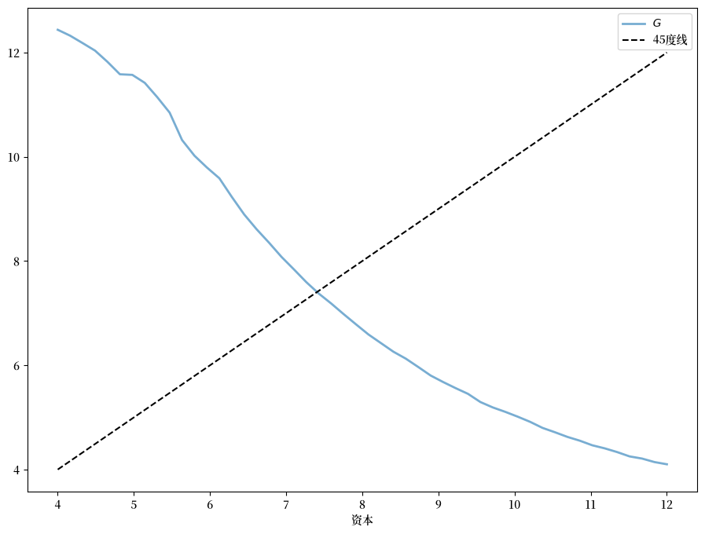
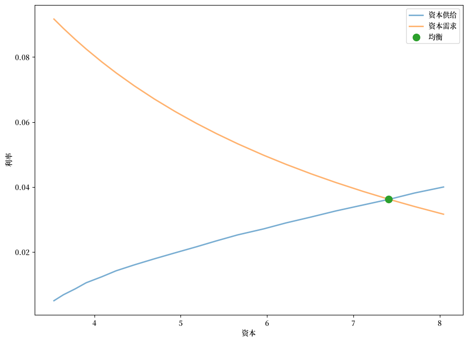
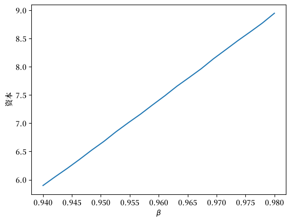

115. 艾亚加里模型#
GPU
本讲座是在配有GPU的机器上构建的——不过没有GPU也可以运行。
Google Colab 提供带GPU的免费套餐，使用方法如下：
点击右上角的”播放”图标
选择 Colab
将运行时环境设置为包含GPU
除了Anaconda中包含的包之外，我们还需要安装JAX
!pip install quantecon jax
115.1. 概述#
在本讲座中，我们将描述一类基于Truman Bewley [Bewley, 1977]工作的模型结构。
我们首先讨论由Rao Aiyagari [Aiyagari, 1994]提出的Bewley模型的一个例子。
该模型具有以下特点：
异质性主体
单一的外生借贷工具
对个人主体借款额度的限制
艾亚加里模型已被用于研究多个主题，包括：
预防性储蓄和流动性约束的影响 [Aiyagari, 1994]
风险分担和资产定价 [Heaton and Lucas, 1996]
财富分布的形状 [Benhabib et al., 2015]
等等
115.1.1. 预备知识#
我们使用以下导入：
import quantecon as qe
import matplotlib.pyplot as plt
import matplotlib as mpl
FONTPATH = "fonts/SourceHanSerifSC-SemiBold.otf"
mpl.font_manager.fontManager.addfont(FONTPATH)
plt.rcParams['font.family'] = ['Source Han Serif SC']
import jax
import jax.numpy as jnp
from typing import NamedTuple
from scipy.optimize import bisect
我们将在JAX中使用64位浮点数以提高精度。
jax.config.update("jax_enable_x64", True)
我们将使用以下函数来计算随机矩阵的平稳分布（关于该算法的参考资料，请参见Economic Dynamics第88页）。
@jax.jit
def compute_stationary(P):
n = P.shape[0]
I = jnp.identity(n)
O = jnp.ones((n, n))
A = I - jnp.transpose(P) + O
return jnp.linalg.solve(A, jnp.ones(n))
115.1.2. 参考文献#
本讲座的主要参考文献是 [Aiyagari, 1994]。
教科书版本可以在 [Ljungqvist and Sargent, 2018] 的第18章中找到。
SeHyoun Ahn和Benjamin Moll的连续时间版本可以在这里找到：链接。
115.2. 经济模型#
115.2.1. 家庭#
无限期生存的家庭/消费者面临异质性收入冲击。
一个单位区间内的事前相同的家庭面临共同的借贷约束。
典型家庭面临的储蓄问题是
受约束于
其中：
\(c_t\) 是当前消费
\(a_t\) 是资产
\(z_t\) 是劳动收入的外生组成部分，捕捉了随机失业风险等
\(w\) 是工资率
\(r\) 是净利率
\(B\) 是主体允许借入的最大金额
外生过程 \(\{z_t\}\) 遵循一个具有给定转移矩阵 \(P\) 的有限状态马尔可夫链。
工资和利率随时间保持不变。
在这个模型的简单版本中，家庭无弹性地供给劳动，因为他们不重视闲暇。
115.2.2. 企业#
企业通过雇佣资本和劳动来生产产出。
企业是竞争性的，面临规模报酬不变。
由于规模报酬不变，企业的数量并不重要。
因此我们可以考虑一个单一的（但仍然是竞争性的）代表性企业。
企业的产出为
其中：
\(A\) 和 \(\alpha\) 是参数，\(A > 0\) 且 \(\alpha \in (0, 1)\)
\(K\) 是总资本
\(N\) 是总劳动供给（在这个简单版本的模型中保持不变）
企业的问题是
参数 \(\delta\) 是折旧率。
这些参数存储在以下namedtuple中：
class Firm(NamedTuple):
A: float = 1.0 # 全要素生产率
N: float = 1.0 # 总劳动供给
α: float = 0.33 # 资本份额
δ: float = 0.05 # 折旧率
从关于资本的一阶条件，企业的资本需求反函数为
def r_given_k(K, firm):
"""
资本的需求反函数。与给定资本需求K相关的利率。
"""
A, N, α, δ = firm
return A * α * (N / K)**(1 - α) - δ
使用这个表达式和企业关于劳动的一阶条件，我们可以将均衡工资率表示为 \(r\) 的函数：
def r_to_w(r, firm):
"""
与给定利率r相关的均衡工资。
"""
A, N, α, δ = firm
return A * (1 - α) * (A * α / (r + δ))**(α / (1 - α))
115.2.3. 均衡#
我们构建一个平稳理性预期均衡（SREE）。
在这样的均衡中：
价格诱导的行为产生的总量与价格一致
总量和价格随时间保持不变
更详细地说，SREE列出了价格、储蓄和生产策略的集合，使得：
家庭在给定价格下希望选择指定的储蓄策略
企业在相同价格下最大化利润
产生的总量与价格一致；特别是，资本需求等于供给
总量（定义为横截面平均值）保持不变
115.3. 代码实现#
让我们看看如何在实践中计算这样的均衡。
下面我们提供代码来求解家庭问题，将 \(r\) 和 \(w\) 视为固定值。
115.3.1. 原语与算子#
我们将使用价值函数迭代来求解家庭问题。
首先我们设置一个 NamedTuple 来存储定义家庭资产积累问题的参数，以及用于求解的网格
class Household(NamedTuple):
β: float # 贴现因子
a_grid: jnp.ndarray # 资产网格
z_grid: jnp.ndarray # 外生状态
Π: jnp.ndarray # 转移矩阵
def create_household(β=0.96, # 贴现因子
Π=[[0.9, 0.1], [0.1, 0.9]], # 马尔可夫链
z_grid=[0.1, 1.0], # 外生状态
a_min=1e-10, a_max=12.5, # 资产网格
a_size=100):
"""
使用自定义网格创建Household namedtuple。
"""
a_grid = jnp.linspace(a_min, a_max, a_size)
z_grid, Π = map(jnp.array, (z_grid, Π))
return Household(β=β, a_grid=a_grid, z_grid=z_grid, Π=Π)
现在我们假设 \(u(c) = \log(c)\)
u = jnp.log
这是一个存储工资率和利率（带默认值）的namedtuple
class Prices(NamedTuple):
r: float = 0.01 # 利率
w: float = 1.0 # 工资
现在我们建立贝尔曼方程右侧（最大化之前）的向量化版本，它是一个表示以下内容的三维数组
对所有 \((a, z, a')\) 成立。
def B(v, household, prices):
# 解包
β, a_grid, z_grid, Π = household
a_size, z_size = len(a_grid), len(z_grid)
r, w = prices
# 将当前消费计算为数组 c[i, j, ip]
a = jnp.reshape(a_grid, (a_size, 1, 1)) # a[i] -> a[i, j, ip]
z = jnp.reshape(z_grid, (1, z_size, 1)) # z[j] -> z[i, j, ip]
ap = jnp.reshape(a_grid, (1, 1, a_size)) # ap[ip] -> ap[i, j, ip]
c = w * z + (1 + r) * a - ap
# 计算(a, z, ap)所有组合的延续回报
v = jnp.reshape(v, (1, 1, a_size, z_size)) # v[ip, jp] -> v[i, j, ip, jp]
Π = jnp.reshape(Π, (1, z_size, 1, z_size)) # Π[j, jp] -> Π[i, j, ip, jp]
EV = jnp.sum(v * Π, axis=-1) # 对最后一个索引jp求和
# 计算贝尔曼方程的右侧
return jnp.where(c > 0, u(c) + β * EV, -jnp.inf)
下一个函数计算贪婪策略
def get_greedy(v, household, prices):
"""
计算v-贪婪策略σ，以一组索引的形式返回。如果
σ[i, j]等于ip，则a_grid[ip]是i, j处的最大化元素。
"""
# 对ap求argmax
return jnp.argmax(B(v, household, prices), axis=-1)
我们定义贝尔曼算子 \(T\)，它接受一个价值函数 \(v\) 并返回贝尔曼方程给出的 \(Tv\)
def T(v, household, prices):
"""
贝尔曼算子。接受一个价值函数v并返回Tv。
"""
return jnp.max(B(v, household, prices), axis=-1)
这是价值函数迭代，它反复应用贝尔曼算子直至收敛
@jax.jit
def value_function_iteration(household, prices, tol=1e-4, max_iter=10_000):
"""
使用编译的JAX循环实现价值函数迭代。
"""
β, a_grid, z_grid, Π = household
a_size, z_size = len(a_grid), len(z_grid)
def condition_function(loop_state):
i, v, error = loop_state
return jnp.logical_and(error > tol, i < max_iter)
def update(loop_state):
i, v, error = loop_state
v_new = T(v, household, prices)
error = jnp.max(jnp.abs(v_new - v))
return i + 1, v_new, error
# 初始循环状态
v_init = jnp.zeros((a_size, z_size))
loop_state_init = (0, v_init, tol + 1)
# 运行不动点迭代
i, v, error = jax.lax.while_loop(condition_function, update, loop_state_init)
return get_greedy(v, household, prices)
作为我们能做的第一个例子，让我们计算并绘制在固定价格下的最优积累策略
# 创建Household实例
household = create_household()
prices = Prices()
r, w = prices
print(f"Interest rate: {r}, Wage: {w}")
Interest rate: 0.01, Wage: 1.0
with qe.Timer():
σ_star = value_function_iteration(household, prices).block_until_ready()
0.1486 seconds elapsed
下图显示了在不同外生状态值下的资产积累策略
β, a_grid, z_grid, Π = household
fig, ax = plt.subplots(figsize=(9, 9))
ax.plot(a_grid, a_grid, 'k--', label="45度线")
for j, z in enumerate(z_grid):
lb = f'$z = {z:.2}$'
policy_vals = a_grid[σ_star[:, j]]
ax.plot(a_grid, policy_vals, lw=2, alpha=0.6, label=lb)
ax.set_xlabel('当前资产')
ax.set_ylabel('下一期资产')
ax.legend(loc='upper left')
plt.show()
findfont: Failed to find font weight normal, now using 600.
findfont: Failed to find font weight normal, now using 600.

该图显示了在不同外生状态值下的资产积累策略。
115.3.2. 资本供给#
要开始考虑均衡，我们需要知道在给定利率 \(r\) 下家庭供给多少资本。
该数量可以通过取最优策略下资产的平稳分布并计算其均值来计算。
下一个函数通过以下步骤计算给定策略 \(\sigma\) 的平稳分布：
计算 \(P_{\sigma}\) 的平稳分布 \(\psi = (\psi(a, z))\)，它定义了策略 \(\sigma\) 下状态 \((a_t, z_t)\) 的马尔可夫链。
对 \(z_t\) 求和以得到 \(a_t\) 的边缘分布。
@jax.jit
def compute_asset_stationary(σ, household):
# 解包
β, a_grid, z_grid, Π = household
a_size, z_size = len(a_grid), len(z_grid)
# 将P_σ构建为形式为P_σ[i, j, ip, jp]的数组
ap_idx = jnp.arange(a_size)
ap_idx = jnp.reshape(ap_idx, (1, 1, a_size, 1))
σ = jnp.reshape(σ, (a_size, z_size, 1, 1))
A = jnp.where(σ == ap_idx, 1, 0)
Π = jnp.reshape(Π, (1, z_size, 1, z_size))
P_σ = A * Π
# 将P_σ重塑为矩阵
n = a_size * z_size
P_σ = jnp.reshape(P_σ, (n, n))
# 获取平稳分布并重塑回[i, j]网格
ψ = compute_stationary(P_σ)
ψ = jnp.reshape(ψ, (a_size, z_size))
# 沿行求和以得到资产的边缘分布
ψ_a = jnp.sum(ψ, axis=1)
return ψ_a
让我们试运行一下。
ψ_a = compute_asset_stationary(σ_star, household)
fig, ax = plt.subplots()
ax.bar(household.a_grid, ψ_a)
ax.set_xlabel("资产水平")
ax.set_ylabel("概率质量")
plt.show()

该分布应该总和为一：
ψ_a.sum()
Array(1., dtype=float64)
下一个函数计算给定工资和利率下，策略 \(\sigma\) 下家庭的总资本供给
def capital_supply(σ, household):
"""
在给定r和w的情况下，策略下诱致的资本存量水平。
"""
β, a_grid, z_grid, Π = household
ψ_a = compute_asset_stationary(σ, household)
return float(jnp.sum(ψ_a * a_grid))
115.3.3. 均衡#
我们通过以下方式计算SREE：
设 \(n=0\) 并以总资本的初始猜测值 \(K_0\) 开始。
给定 \(K_n\)，从企业的决策问题中确定价格 \(r, w\)。
计算给定这些价格下家庭的最优储蓄策略。
将总资本 \(K_{n+1}\) 计算为给定该储蓄策略下稳态资本的均值。
如果 \(K_{n+1} \approx K_n\)，停止；否则转到步骤2。
我们可以将步骤2-4中的操作序列写为
如果 \(K_{n+1}\) 与 \(K_n\) 一致，那么我们就得到了一个SREE。
换句话说，我们的问题是找到一维映射 \(G\) 的不动点。
以下是用Python函数表示的 \(G\)
def G(K, firm, household):
# 获取与K相关的价格r, w
r = r_given_k(K, firm)
w = r_to_w(r, firm)
# 用这些价格生成一个household对象，计算
# 总资本。
prices = Prices(r=r, w=w)
σ_star = value_function_iteration(household, prices)
return capital_supply(σ_star, household)
作为第一步，让我们直观地检查一下
num_points = 50
firm = Firm()
household = create_household()
k_vals = jnp.linspace(4, 12, num_points)
out = [G(k, firm, household) for k in k_vals]
fig, ax = plt.subplots(figsize=(11, 8))
ax.plot(k_vals, out, lw=2, alpha=0.6, label='$G$')
ax.plot(k_vals, k_vals, 'k--', label="45度线")
ax.set_xlabel('资本')
ax.legend()
plt.show()

现在让我们来计算均衡。
看上图，我们发现简单的迭代方案 \(K_{n+1} = G(K_n)\) 会在高低值之间循环，导致收敛缓慢。
因此，我们使用如下形式的阻尼迭代方案
def compute_equilibrium(firm, household,
K0=6, α=0.99, max_iter=1_000, tol=1e-4,
print_skip=10, verbose=False):
n = 0
K = K0
error = tol + 1
while error > tol and n < max_iter:
new_K = α * K + (1 - α) * G(K, firm, household)
error = abs(new_K - K)
K = new_K
n += 1
if verbose and n % print_skip == 0:
print(f"At iteration {n} with error {error}")
return K, n
firm = Firm()
household = create_household()
print("\nComputing equilibrium capital stock")
with qe.Timer():
K_star, n = compute_equilibrium(firm, household, K0=6.0)
print(f"Computed equilibrium {K_star:.5} in {n} iterations")
Computing equilibrium capital stock
0.9972 seconds elapsed
Computed equilibrium 7.4095 in 259 iterations
考虑到我们可以多快地求解家庭问题，这种收敛速度并不算快。
你可以尝试改变 \(\alpha\)，但通常这个参数很难事先设定。
在下面的练习中，你将被要求改用二分法，这种方法通常表现更好。
115.3.4. 供给和需求曲线#
我们可以使用供给和需求曲线来可视化均衡。
以下代码绘制了总供给和需求曲线。
交点给出了均衡利率和资本
def prices_to_capital_stock(household, r, firm):
"""
将价格映射到诱致的资本存量水平。
"""
w = r_to_w(r, firm)
prices = Prices(r=r, w=w)
# 计算最优策略
σ_star = value_function_iteration(household, prices)
# 计算资本供给
return capital_supply(σ_star, household)
# 创建计算资本需求和供给的r值网格
num_points = 20
r_vals = jnp.linspace(0.005, 0.04, num_points)
# 计算资本供给
k_vals = []
for r in r_vals:
k_vals.append(prices_to_capital_stock(household, r, firm))
# 绘制与企业的资本需求相对
fig, ax = plt.subplots(figsize=(11, 8))
ax.plot(k_vals, r_vals, lw=2, alpha=0.6,
label='资本供给')
ax.plot(k_vals, r_given_k(
jnp.array(k_vals), firm), lw=2, alpha=0.6,
label='资本需求')
# 在均衡点添加标记
r_star = r_given_k(K_star, firm)
ax.plot(K_star, r_star, 'o', markersize=10, label='均衡')
ax.set_xlabel('资本')
ax.set_ylabel('利率')
ax.legend(loc='upper right')
plt.show()

115.4. 练习#
练习 115.1
编写一个新版本的 compute_equilibrium，使用 scipy.optimize 中的 bisect 而不是阻尼迭代。
看看你能否使它比之前的版本更快。
在 bisect 中，
你应该设置
xtol=1e-4，以获得与之前版本相同的误差容限。对于二分法程序的上下界，尝试使用
a = 1.0和b = 20.0。
解答 练习 115.1
我们使用二分法找到函数 \(h(k) = k - G(k)\) 的零点
def compute_equilibrium_bisect(firm, household, a=1.0, b=20.0):
K = bisect(lambda k: k - G(k, firm, household), a, b, xtol=1e-4)
return K
firm = Firm()
household = create_household()
print("\nComputing equilibrium capital stock using bisection")
with qe.Timer():
K_star = compute_equilibrium_bisect(firm, household)
print(f"Computed equilibrium capital stock {K_star:.5}")
Computing equilibrium capital stock using bisection
0.0745 seconds elapsed
Computed equilibrium capital stock 7.4178
二分法比阻尼迭代方案更快。
练习 115.2
展示均衡资本存量如何随 \(\beta\) 变化。
使用以下 \(\beta\) 值并绘制你发现的关系。
β_vals = jnp.linspace(0.94, 0.98, 20)
解答 练习 115.2
K_vals = []
K = 6.0 # 初始猜测值
for β in β_vals:
household = create_household(β=β)
K = compute_equilibrium_bisect(firm, household, 0.5 * K, 1.5 * K)
print(f"Computed equilibrium {K:.4} at β = {β}")
K_vals.append(K)
fig, ax = plt.subplots()
ax.plot(β_vals, K_vals, ms=2)
ax.set_xlabel(r'$\beta$')
ax.set_ylabel('资本')
plt.show()
Computed equilibrium 5.897 at β = 0.94
Computed equilibrium 6.052 at β = 0.9421052631578948
Computed equilibrium 6.202 at β = 0.9442105263157894
Computed equilibrium 6.36 at β = 0.9463157894736841
Computed equilibrium 6.524 at β = 0.9484210526315789
Computed equilibrium 6.679 at β = 0.9505263157894738
Computed equilibrium 6.85 at β = 0.9526315789473684
Computed equilibrium 7.008 at β = 0.9547368421052631
Computed equilibrium 7.16 at β = 0.9568421052631579
Computed equilibrium 7.325 at β = 0.9589473684210527
Computed equilibrium 7.486 at β = 0.9610526315789474
Computed equilibrium 7.657 at β = 0.963157894736842
Computed equilibrium 7.81 at β = 0.9652631578947368
Computed equilibrium 7.967 at β = 0.9673684210526317
Computed equilibrium 8.142 at β = 0.9694736842105263
Computed equilibrium 8.302 at β = 0.971578947368421
Computed equilibrium 8.463 at β = 0.9736842105263158
Computed equilibrium 8.616 at β = 0.9757894736842105
Computed equilibrium 8.773 at β = 0.9778947368421053
Computed equilibrium 8.948 at β = 0.98

练习 115.3
在本讲座中，我们使用价值函数迭代来求解家庭问题。
另一种方法是霍华德策略迭代（HPI），在Dynamic Programming中有详细讨论。
对于某些问题，HPI可以比VFI更快，因为它使用更少但计算量更大的迭代。
你的任务是实现霍华德策略迭代，并将结果与价值函数迭代进行比较。
你需要的关键概念：
霍华德策略迭代需要计算策略 \(\sigma\) 的价值 \(v_{\sigma}\)，定义为：
其中 \(r_{\sigma}\) 是策略 \(\sigma\) 下的回报向量，\(P_{\sigma}\) 是由 \(\sigma\) 诱导的转移矩阵。
要解决这个问题，你需要：
计算当前回报 \(r_{\sigma}(a, z) = u((1 + r)a + wz - \sigma(a, z))\)
建立线性算子 \(R_{\sigma}\)，其中 \((R_{\sigma} v)(a, z) = v(a, z) - \beta \sum_{z'} v(\sigma(a, z), z') \Pi(z, z')\)
使用
jax.scipy.sparse.linalg.bicgstab求解 \(v_{\sigma} = R_{\sigma}^{-1} r_{\sigma}\)
你可以使用本讲座中已经定义的 get_greedy 函数。
实现以下霍华德策略迭代程序：
def howard_policy_iteration(household, prices,
tol=1e-4, max_iter=10_000, verbose=False):
"""
霍华德策略迭代程序。
"""
# 你的代码在这里
pass
实现后，使用HPI计算均衡资本存量，并验证在默认参数值下它是否产生与VFI大致相同的结果。
解答 练习 115.3
首先，我们需要为霍华德策略迭代实现辅助函数。
以下函数计算数组 \(r_{\sigma}\)，它给出策略 \(\sigma\) 下的当前回报：
def compute_r_σ(σ, household, prices):
"""
计算策略σ下每个i, j处的当前回报。特别地，
r_σ[i, j] = u((1 + r)a[i] + wz[j] - a'[ip])
当 ip = σ[i, j] 时。
"""
# 解包
β, a_grid, z_grid, Π = household
a_size, z_size = len(a_grid), len(z_grid)
r, w = prices
# 计算 r_σ[i, j]
a = jnp.reshape(a_grid, (a_size, 1))
z = jnp.reshape(z_grid, (1, z_size))
ap = a_grid[σ]
c = (1 + r) * a + w * z - ap
r_σ = u(c)
return r_σ
线性算子 \(R_{\sigma}\) 定义为：
def R_σ(v, σ, household):
# 解包
β, a_grid, z_grid, Π = household
a_size, z_size = len(a_grid), len(z_grid)
# 建立数组 v[σ[i, j], jp]
zp_idx = jnp.arange(z_size)
zp_idx = jnp.reshape(zp_idx, (1, 1, z_size))
σ = jnp.reshape(σ, (a_size, z_size, 1))
V = v[σ, zp_idx]
# 将 Π[j, jp] 扩展为 Π[i, j, jp]
Π = jnp.reshape(Π, (1, z_size, z_size))
# 计算并返回 v[i, j] - β Σ_jp v[σ[i, j], jp] * Π[j, jp]
return v - β * jnp.sum(V * Π, axis=-1)
下一个函数计算给定策略的终身价值：
def get_value(σ, household, prices):
"""
通过计算以下内容获得策略σ的终身价值
v_σ = R_σ^{-1} r_σ
"""
r_σ = compute_r_σ(σ, household, prices)
# 将 R_σ 简化为关于v的函数
_R_σ = lambda v: R_σ(v, σ, household)
# 使用迭代程序计算 v_σ = R_σ^{-1} r_σ。
return jax.scipy.sparse.linalg.bicgstab(_R_σ, r_σ)[0]
现在我们可以实现霍华德策略迭代：
@jax.jit
def howard_policy_iteration(household, prices, tol=1e-4, max_iter=10_000):
"""
使用编译的JAX循环实现霍华德策略迭代程序。
"""
β, a_grid, z_grid, Π = household
a_size, z_size = len(a_grid), len(z_grid)
def condition_function(loop_state):
i, σ, v_σ, error = loop_state
return jnp.logical_and(error > tol, i < max_iter)
def update(loop_state):
i, σ, v_σ, error = loop_state
σ_new = get_greedy(v_σ, household, prices)
v_σ_new = get_value(σ_new, household, prices)
error = jnp.max(jnp.abs(v_σ_new - v_σ))
return i + 1, σ_new, v_σ_new, error
# 初始循环状态
σ_init = jnp.zeros((a_size, z_size), dtype=int)
v_σ_init = get_value(σ_init, household, prices)
loop_state_init = (0, σ_init, v_σ_init, tol + 1)
# 运行不动点迭代
i, σ, v_σ, error = jax.lax.while_loop(condition_function, update, loop_state_init)
return σ
现在让我们创建一个使用HPI的G函数的修改版本：
def G_hpi(K, firm, household):
# 获取与K相关的价格r, w
r = r_given_k(K, firm)
w = r_to_w(r, firm)
# 生成价格并使用HPI计算总资本。
prices = Prices(r=r, w=w)
σ_star = howard_policy_iteration(household, prices)
return capital_supply(σ_star, household)
并使用HPI计算均衡：
def compute_equilibrium_bisect_hpi(firm, household, a=1.0, b=20.0):
K = bisect(lambda k: k - G_hpi(k, firm, household), a, b, xtol=1e-4)
return K
firm = Firm()
household = create_household()
print("\nComputing equilibrium capital stock using HPI")
with qe.Timer():
K_star_hpi = compute_equilibrium_bisect_hpi(firm, household)
print(f"Computed equilibrium capital stock with HPI: {K_star_hpi:.5}")
print(f"Previous equilibrium capital stock with VFI: {K_star:.5}")
print(f"Difference: {abs(K_star_hpi - K_star):.6}")
Computing equilibrium capital stock using HPI
0.4844 seconds elapsed
Computed equilibrium capital stock with HPI: 7.4172
Previous equilibrium capital stock with VFI: 7.4178
Difference: 0.000579834
结果显示两种方法产生了大致相同的均衡，证实了HPI是VFI的有效替代方案。